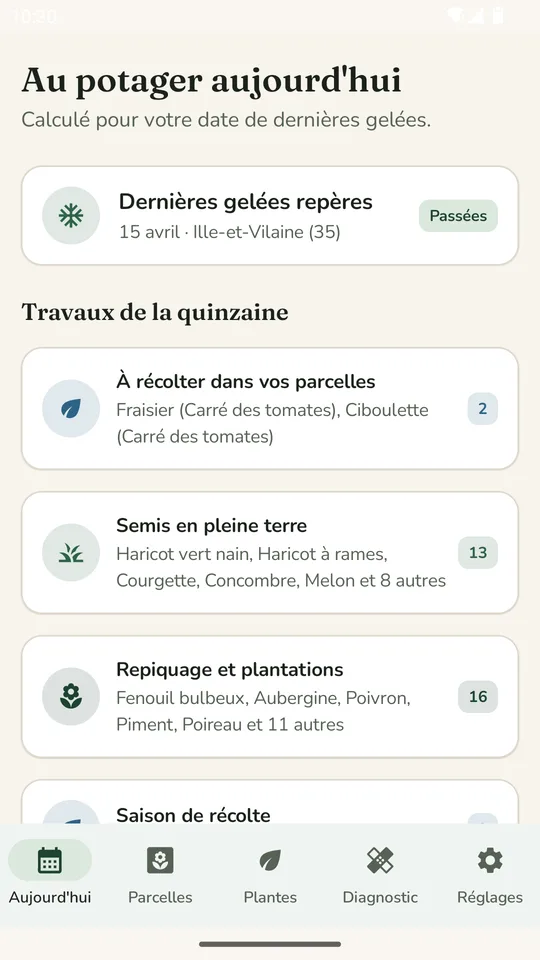
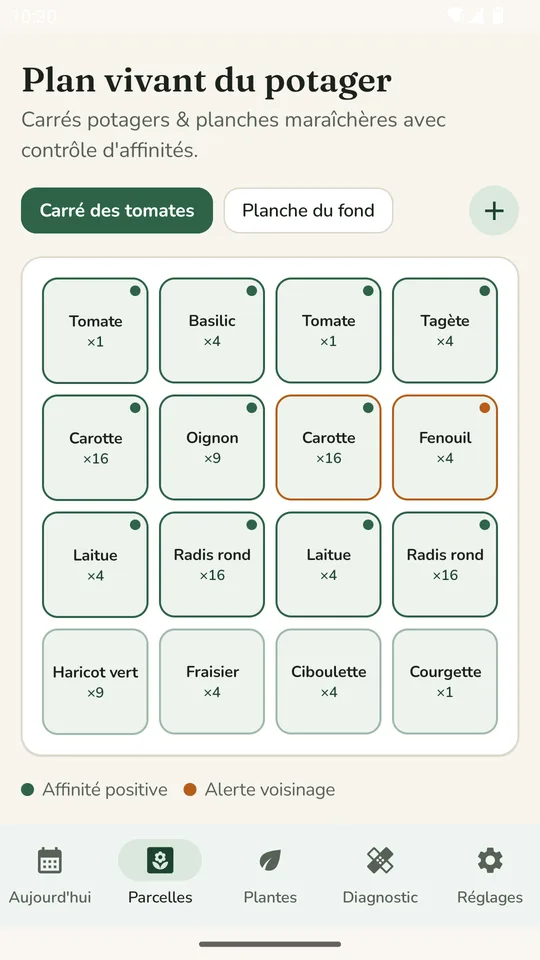
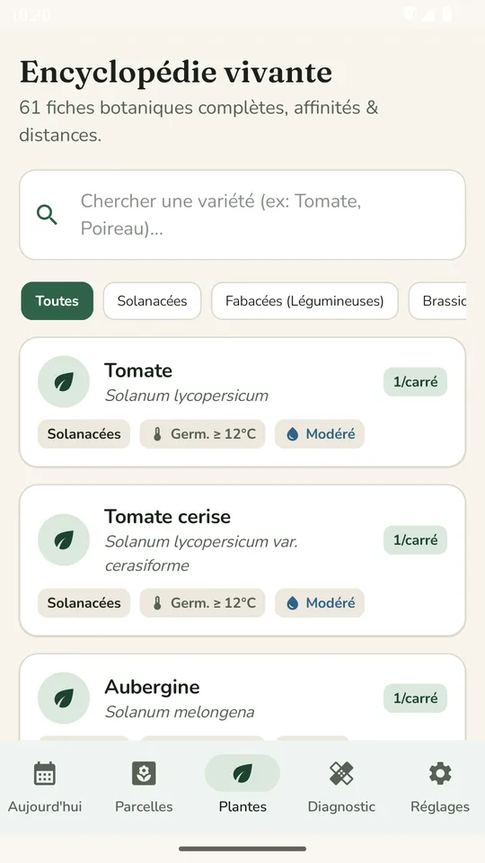
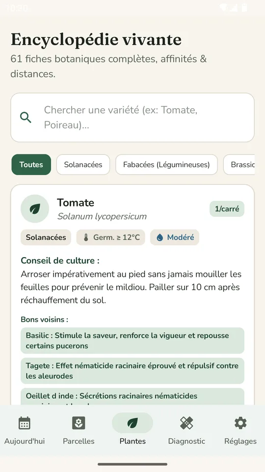
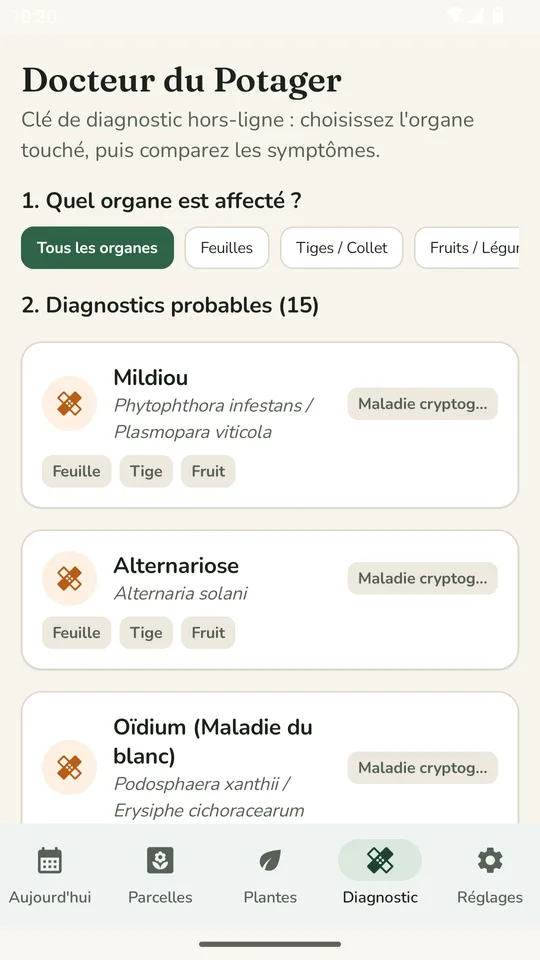
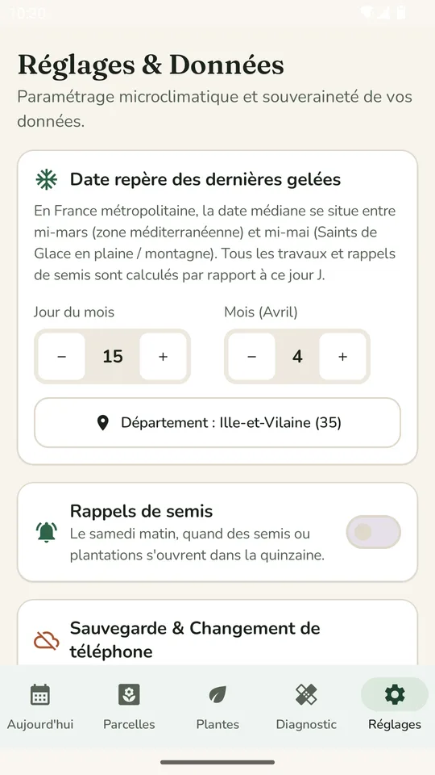

Au potager aujourd'hui
Les semis, repiquages et récoltes de la quinzaine, calculés à partir de votre date de dernières gelées.
Compagnon de potager
Sillon dit ce qu'il y a à faire cette quinzaine, aide à organiser les parcelles et repère les maladies. Tout reste sur votre téléphone, sans réseau.

Quatre écrans pour suivre la saison, du semis à la récolte.
Les semis, repiquages et récoltes de la quinzaine, calculés à partir de votre date de dernières gelées.
Carrés potagers et planches maraîchères, avec les affinités positives et les alertes de voisinage entre plantes.
Des fiches de plantes avec conseils de culture, bons et mauvais voisins, température de germination et besoins en eau.
Choisissez l'organe touché, comparez les symptômes et repérez maladies et ravageurs probables, sans connexion.





Captures réalisées avec des données d'exemple.